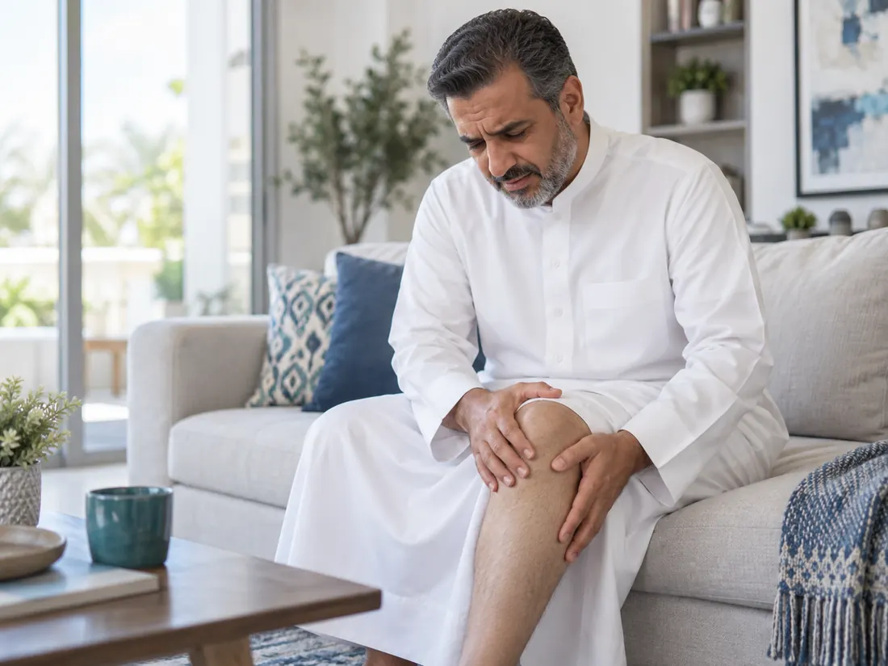
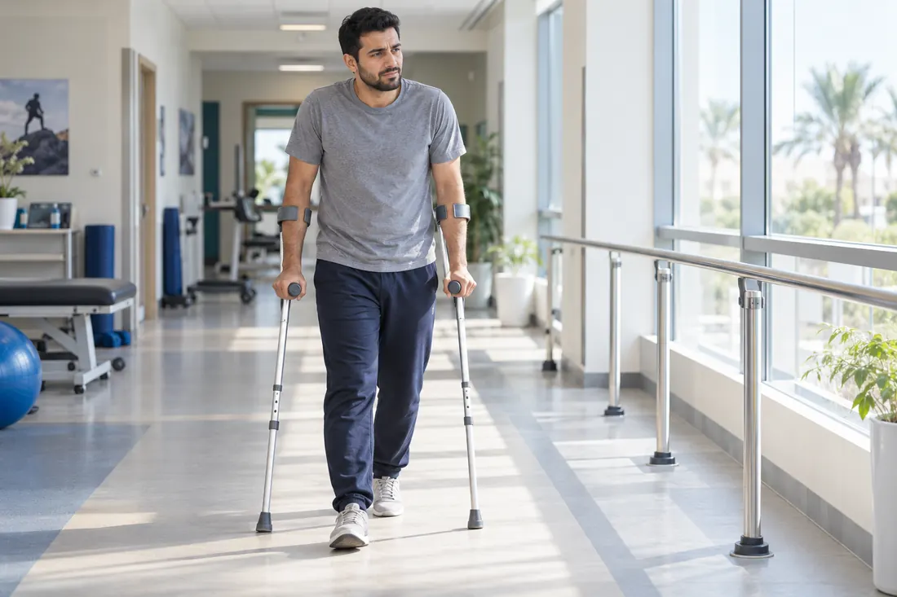

مؤهلات وخبرات عالمية
تدريب وزمالات كندية متخصصة في جراحات مفاصل الورك والركبة والكسور المعقدة.
رعاية متخصصة لخشونة مفاصل الركبة والورك، وكسور الحوض والحُق، والكسور المعقدة ومضاعفاتها — تبدأ بالإنصات والتقييم الدقيق، والجراحة عندما تكون الخيار الأنسب.

من العلاج التحفظي والتمارين والحقن في الحالات المختارة إلى استبدال المفصل عند الحاجة.
اعرف أكثر ↖ 02تقييم مصدر الألم وخيارات الحفاظ على المفصل أو استبداله بحسب الحالة.
اعرف أكثر ↖ 03تشخيص سريري، برنامج تقوية وحركة، وتدرج آمن للعودة للنشاط.
اقرأ المزيد ↖ 04تقييم الإصابات المعقدة ووضع خطة دقيقة بحسب الاستقرار والتطابق المفصلي.
اعرف أكثر ↖ 05الكسور متعددة الأجزاء والحالات التي تحتاج تثبيتًا أو ترميمًا متقدمًا.
افتح الدليل ↖ 06عدم الالتئام، سوء الالتئام، فشل التثبيت، وتقييم إزالة الشرائح والمسامير.
افتح الدليل ↖
تدريب وزمالات كندية متخصصة في جراحات مفاصل الورك والركبة والكسور المعقدة.
خبرة تجمع بين ترميم الكسور والمحافظة على المفصل أو استبداله عند الحاجة، للوصول إلى أفضل وظيفة وحركة ممكنة.
توظيف التقنيات الحديثة عندما تضيف قيمة فعلية للدقة والأمان والنتيجة المتوقعة.
التدرج من الخيارات التحفظية والعلاج الطبيعي والتأهيل إلى الجراحة فقط عندما تكون الخيار الأفضل.
نشرح الخيارات الجراحية والفوائد والمخاطر بوضوح، ثم نتخذ القرار المناسب مع المريض.
رحلة المريض العلاجية لا تنتهي بإجراء العملية الجراحية؛ بل يواصل فريقنا معه مراحل التأهيل والتعافي لدعم التعافي والمتابعة بصورة منظمة.

تجربة مهنية تجمع بين الممارسة الجراحية للحالات المعقدة، وبناء برامج تدريب الجراحين، وقيادة غرف العمليات والخدمات الجراحية؛ بهدف تحويل المعرفة والخبرة إلى رعاية أكثر دقة وتنظيمًا للمريض.
في جراحات المفاصل، وكسور الحوض والحُق، والكسور المعقدة وإعادة البناء.
مؤسس أول برنامج زمالة بوزارة الصحة في جراحة الكسور المعقدة، ومشارك في التعليم والتقييم المهني.
مشاركات كمتحدث في مؤتمرات علمية محلية ودولية، وإسهامات في الأبحاث وتأليف الكتب المتخصصة؛ من بينها المشاركة في كتابة فصل علمي ضمن مرجع AAOS OKU: Hip & Knee الصادر عن الأكاديمية الأمريكية لجراحي العظام.
خبرة في الإدارة الطبية وقيادة العمليات الجراحية، وتطوير الكفاءة التشغيلية وجودة وسلامة الخدمات؛ بما يدعم رعاية أكثر تنظيمًا وأمانًا للمريض.
هذه الخبرة المتكاملة تنعكس على رحلة المريض: تشخيص أوضح، قرار مشترك، اختيار دقيق لتوقيت الجراحة، ومتابعة تمتد إلى التأهيل والتعافي.

التشخيص، العلاج التحفظي والتمارين والحقن، ومتى يصبح استبدال المفصل خيارًا مناسبًا.

الأعراض والتشخيص، التمارين والأدوية والحقن، ومتى يصبح استبدال المفصل خيارًا مناسبًا.

تشخيص سريري، تعديل الحمل، تقوية الركبة والورك، وتدرج العودة للجري والنشاط.

مستقر أم غير مستقر؟ علامات الخطر، مبادئ العلاج، التحميل والتأهيل حسب نمط الإصابة.

التطابق المفصلي والاستقرار، الأشعة وCT، متى تكفي المتابعة ومتى تصبح الجراحة مناسبة.

علامات الخطر، متى نحتاج التصوير، العلاج غير الجراحي، وتمارين العودة إلى الحركة والنشاط.

أسباب الألم الخارجي للمرفق، التشخيص، تعديل الحمل، التمارين المتدرجة والخيارات العلاجية.

كيف يُشخّص، متى تكفي المراقبة، ومتى نناقش السحب أو الاستئصال الجراحي.

ألم الكعب عند الخطوات الأولى، التشخيص، الحذاء والدعامات، وخطة تمارين متدرجة للعودة للنشاط.

ألم جهة الإبهام من الرسغ، التشخيص، تعديل الحمل، الجبيرة والتمارين والحقن.
توضيح أسباب إصابة الركبة بالخشونة وتصنيفها بين النوع الأولي والنوع الثانوي.
شاهد على يوتيوب ↖تقليل الوزن والعلاج الطبيعي كخيار أساسي قبل الجراحة وفي مراحل التأهيل.
شاهد على يوتيوب ↖استضافة وتغطية خاصة تناولت الرعاية المتقدمة والتطور في خدمات جراحة العظام.
تغطية تكريم معالي وزير الصحة لإنجاز ضمن منظومة الرعاية الصحية.
اقرأ الخبر ↖حوار توعوي حول حماية المفاصل والوقاية من الإجهاد والإصابات خلال موسم الحج.
استمع على يوتيوب ↖تقرير صحفي طبي يعرض الخبرات المتخصصة في جراحات العظام والكسور المعقدة.
خبر يبرز تطور خدمات عمليات اليوم الواحد ودورها في تحسين تجربة المريض وكفاءة الرعاية.
اقرأ الخبر في واس ↖الزيارة الأولى هدفها أن تخرج بصورة أوضح عن حالتك وخياراتك، وليس مجرد توصية عامة.
المعلومات في هذا الموقع للتثقيف ولا تغني عن التقييم الطبي المباشر.